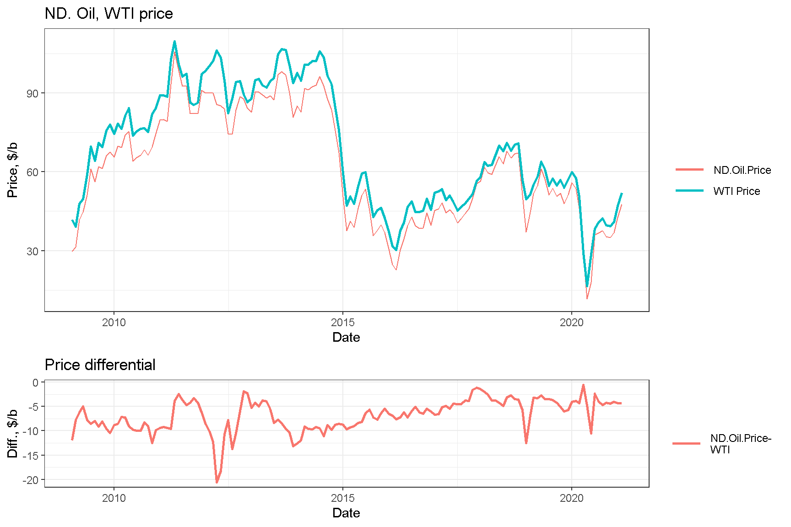
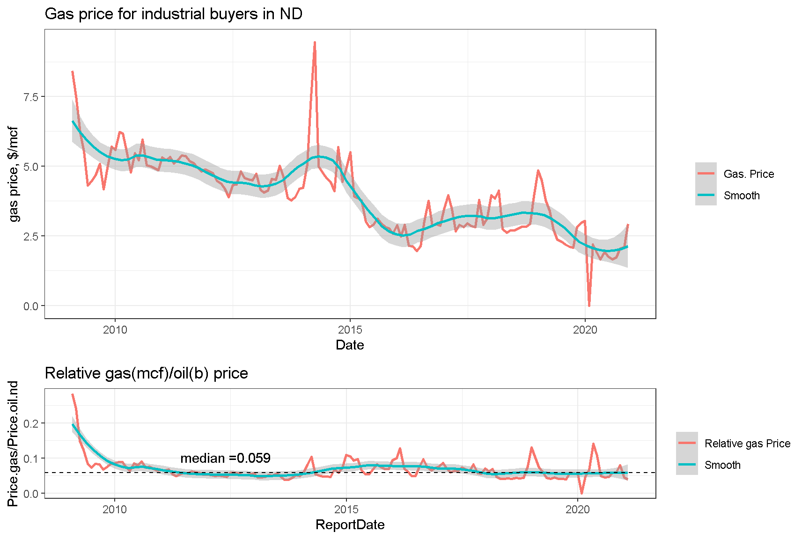
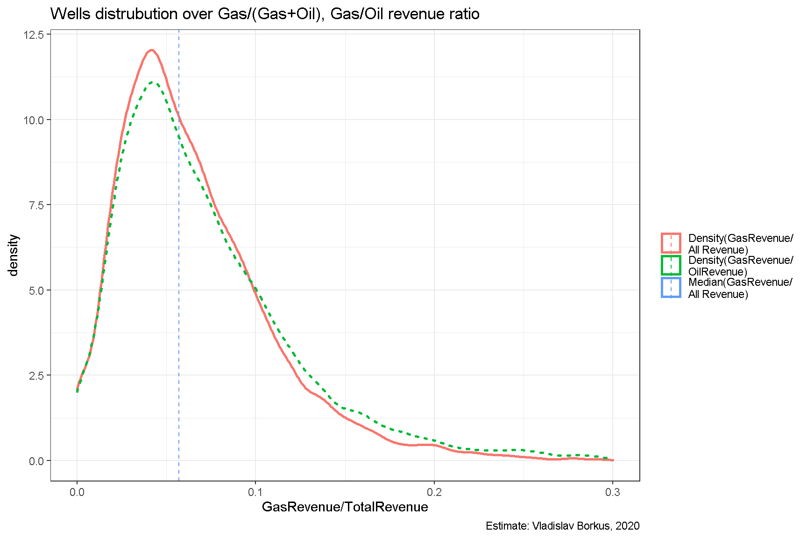
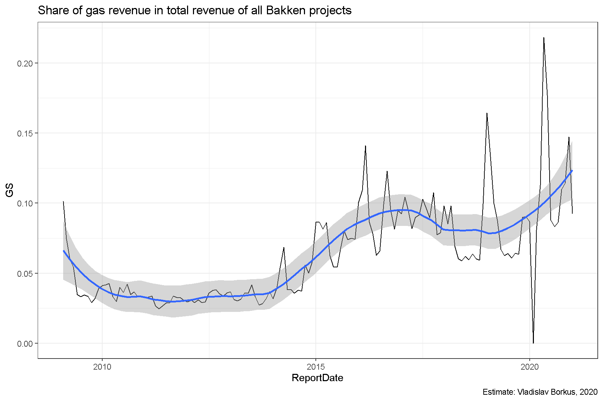

Выручка складывается, очевидно, из стоимости проданной нефти и газа, пропорциональных ценам этих видов сырья. При этом нефть удается реализовать полностью, а газ частично.
Для моделирования использовалась цена нефти в Северной Дакоте, т.е. уже с учетом дисконта на стоимость логистики. Ценовой дифференциал с WTI большую часть периода был весьма значителен (более $10 за баррель), но сократился в последне время. Средняя за 10 лет цена нефти в СД составляла 64.4 $/barrel.

C середины 2009 года относительная цена 1 mcf газа к цене одного барреля нефти не превышала 0.15 и не падала ниже 0.03. Медианное значение составило около 0.06 mcf/barrel.

Сведения, касающихся поскважинных показателей по продажам газа присутствуют в отчетах только для части скважин. Для другой части (более мелких дебитов) опубликованы только суммарные показатели, записи с такими пропусками заполнены случайными значениями, полученными исходя из функции распределения, построенной по имеющимся данным. Как показал дальнейший анализ, ввиду малости вклада газа в выручку, точные значения мало влияют на показатели рентабельности проектов.
Для медианной скважины доход от газа составляет примерно 8% дохода от продажи нефти и 7.4% общего дохода. Распределение, правда, не совсем симметрично - заметное число скважин имеет избыток производства газа.
| Dataset statistic | Median value | Mean value |
|---|---|---|
| Gas Volume/Oil Volume | 1.08 | 1.97 |
| Gas Revenue/Oil Revenue | 0.06 | 2.07 |
| Gas Revenue/All Revenue | 0.06 | 0.07 |

Как уже говорилось, со временем баланс в добыче газа и нефти смещается в сторону увеличения добычи газа. Ввиду примерного постоянства относительной цены газа, это приводит к тому, что газ дает все большую долю в выручке в целом по месторождению.

На этом завершается рассмотрение исходной информации, и можно непосредственно переходить к непосредственно моделированию и оценке результатов.